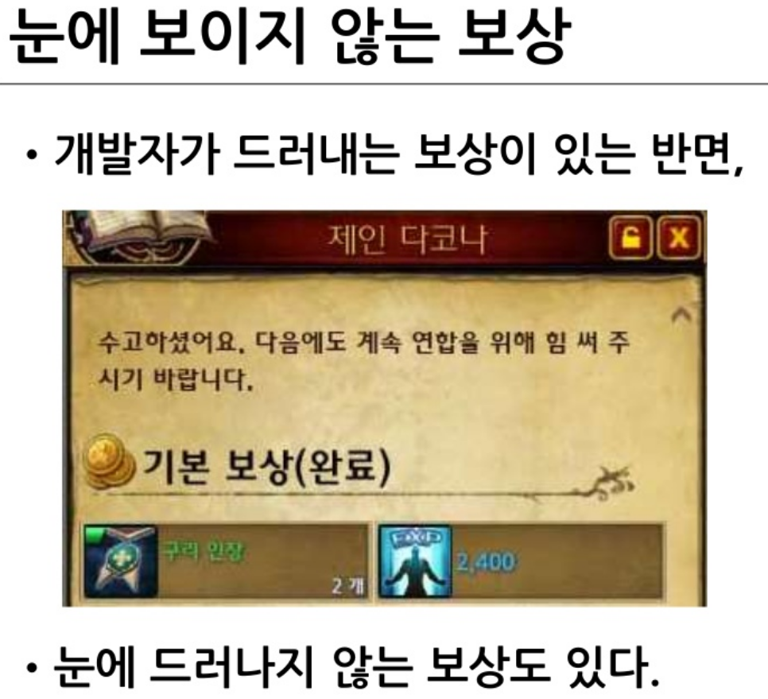

규칙
무엇을 할 수 있고, 어떤 결과가 나오는지를 정합니다.
 게임 화면 속 구성요소
게임 화면 속 구성요소
GAME ANATOMY
주인공이 있고, 방해물이 있으며, 시간과 조작이 행동을 제한하고, 코인이 행동의 방향을 알려줍니다.
주인공과 플레이어의 조작 대상
적, 장애물, 제한시간과 실패 조건
코인, 진행, 승리와 다음 행동의 이유
CORE LOOP
좋은 기능도 반복 구조 안에 들어오지 못하면 장식에 머뭅니다.
무엇을 할 수 있고, 어떤 결과가 나오는지를 정합니다.
같은 행동을 왜 해야 하는지 의미를 부여합니다.
행동이 가치 있었다고 느끼게 해 다음 반복을 만듭니다.
RULE — 1 / 3
간단한 주사위 게임에 질문을 하나씩 추가하면, 규칙이 왜 필요한지 보입니다.
두 주사위의 합이 높은 사람이 이긴다.
승패를 판단할 수 없습니다. 다시 굴리는 규칙이 필요합니다.
같은 상황이 반복될 때를 대비해 종료 조건을 정해야 합니다.
세 번까지 동점이면 무승부. 목표와 종료가 있어야 게임이 끝납니다.
MOTIVATION — 2 / 3
숫자를 빼는 연산과 적을 공격하는 행동은 규칙이 같지만, 플레이어가 느끼는 이유는 다릅니다.
RULE ONLY
정답은 있지만, 계속해야 할 감정적 이유는 약합니다.
RULE + MEANING
적, 무기, 피해라는 맥락이 같은 계산을 전투로 바꿉니다.
MOTIVATION DESIGN
지금 할 일, 이번 플레이의 목적, 끝까지 가야 할 이유가 서로 연결돼야 합니다.
적을 피한다, 퍼즐을 푼다, 다음 위치로 이동한다.
스테이지를 끝낸다, 장비를 얻는다, 보스를 쓰러뜨린다.
성장, 수집, 관계, 세계관과 이야기의 완성을 향한다.
REWARD — 3 / 3
개발자가 보여주는 보상과 플레이어가 느끼는 보상은 다를 수 있습니다.

PLAYER DIFFERENCE
보상은 지급한 항목이 아니라, 플레이어가 실제로 가치 있다고 받아들인 경험입니다.
어려운 목표, 기록, 완성률에서 강한 보상을 느낍니다.
새로운 공간, 비밀, 세계관의 발견이 보상이 됩니다.
협동, 소속, 타인과 공유한 기억에서 가치를 느낍니다.
CONCLUSION
규칙이 행동을 만들고,
동기가 의미를 만들며,
보상이 다음 행동을 만듭니다.
요약 검토에서 심화 검토까지, 퍼블리셔가 실제로 확인하는 기준으로 넘어갑니다.